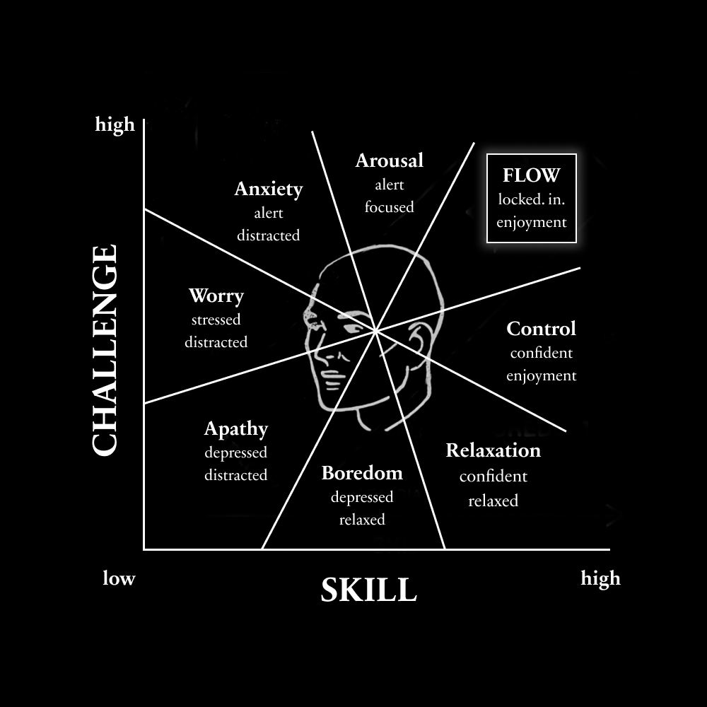

The reality is, you have responsibilities. I get it. Some of you can't just magically scrape back time. You may have a job, kids, spouse. Those things are important. Meaning, you probably have one hour a day you can put toward a better future.
这其实是件好事，因为 365 个小时足以彻底改变你的人生。
And that's a great thing, because you can drastically change your life in 365 hours.
And if you have more time to spare, even better, but do not think that you "need more time." You need a deep sense of clarity that allows you to make the most of the time you currently have. And you need to feel like your efforts are making a difference in your life.
我在那些成功、却没有为成功牺牲生活的创意人和 CEO 身上注意到一个规律：他们在体力上工作得很少，可人们却把他们看作勤奋的人。在头脑里，他们一直在思考、谋划、筹算。他们在脑子里工作。而一旦想法清晰了，他们就以别人无法匹敌的速度去执行。
A pattern I’ve noticed in successful creatives and CEOs - that didn’t sacrifice their life for success - is that they physically worked very little, yet people see them as hard workers. Mentally, they were always thinking, plotting, and scheming. They worked in their mind. And once they were clear on their idea, they executed with speed that others couldn’t compete with.
生产力就像健身，你不会不吃不睡每天训练 8 小时，还指望取得进步。头脑也是一样。
Productivity is like fitness, and you wouldn't train 8 hours a day with no food or sleep and expect to make progress. The same applies to the mind.
Recovery – Subconscious work that almost everyone ignores. The rest, leisure, and lack of narrow focused stress that allows breakthrough ideas to form the future of your work.
所以，你的目标是每天建造一个小时，直到你能全职追求你想要的东西。然后，你再开始考虑过渡到维护工作。
Your goal, then, is to build for one hour a day until you are able to pursue what you want full time. Then you start to think about transitioning into maintenance work.
但你要建造什么？
But what do you build?
你如何穿透那些干扰、以及那个似乎是你敌人的内心声音？
How do you pierce through the distractions and inner voice that seems to be your enemy?
你从哪里找到源源不断的动力，每天都出现在工作面前？
Where do you find a never-ending source of motivation to show up every day?
这些问题的答案，在很大程度上决定了你的人生。
The answers to those questions determine much of your life.
I have 6 ideas to share with you on deep productivity. Not just "sit down and do the work" because that's been ran through enough and obviously hasn't fixed everyone's problems. You need understanding. We need to dissect the psychology of focus, how distractions work, and finally a protocol you can use to make your one hour a day count.
这会很全面。一堂完整的专注大师课，让你从一篇文章中获得 10 本书的知识。
This will be comprehensive. A complete focus masterclass so you can get 10 books worth of knowledge from one article.
我希望读完之后，你别无选择，只能对自己想从人生中得到什么、以及如何得到它感到清晰。
My hope is that I leave you with no option but to feel clear on what you want out of life and how to get it.
正因如此，这篇会很长。我只请求你投入全部注意力。如果你现在没时间，就收藏起来，回头再读。
Because of that, this will be long. All I ask is that you dedicate your full attention. If you don't have the time, bookmark it and come back to it.
The optimal state of inner experience is one in which there is order in consciousness. This happens when psychic energy—or attention—is invested in realistic goals, and when skills match the opportunities for action. The pursuit of a goal brings order in awareness because a person must concentrate attention on the task at hand and momentarily forget everything else.
– Mihaly Csikszentmihalyi
你的心智是一台运行着"人生游戏"的超级计算机。
Your mind is a supercomputer running the game of life.
你的注意力（一种极其稀缺的资源）就是内存（RAM）。
Your attention (an incredibly scarce resource), is the RAM.
给不懂技术的人解释一下，RAM 的意思是"随机存取存储器"。它决定了计算机的性能。
RAM, for the non-technical, means "random access memory." It determines the performance of the computer.
The more programs and browser tabs you have open, the slower your computer will be. The mind works the same way, but there's one major caveat... you have a threshold for how much your mind can process.
Humans can process around 50 bits of conscious information per second. The unconscious mind can manage about 11 million bits per second (this is for things like walking, sensing, accessing stored habits or patterns), but that's aside the point.
In other words, when you add it up, you have about 125 billion bits of information to "use up" in your lifetime. That's it. That's your potential. Every single thing you give your attention lowers that number by a small amount. That should terrify you.
Sadly, most people live with multiple high-demand programs running at the same time. It's no wonder they can't focus. Their attention is split between thoughts about regretful past mistakes, thoughts about stressful future tasks, desires for pleasure and entertainment to escape those, and open loops of tasks they were supposed to complete but forgot about (I'm looking at you dudes who forgot to take out the trash).
干扰的清单还很长，而这正是危险所在。
The list of distractions goes on, and that's the danger.
The good life demands consistent effort toward your own goals. You know the feeling. When everything aligns and you enter a blur of fulfilling work. I want to show you how to replicate it.
Entropy, for those wondering, is one of the most fundamental principles in physics. The simple version is that there are vastly more ways for things to be disorganized than organized, so systems naturally tend toward messier and often more chaotic states. Energy needs to be put into keeping things ordered.
As an everyday example, if you don't put energy into maintaining your bookshelf, books will end up all over your house, at your friend's house, and in places you didn't think they could end up. The longer you go without organizing your shelf, the more effort it will take when you finally decide to.
Further, if you don't put effort into cleaning your room, it will slowly get messier and messier until you're late for work because your good socks are under a pizza box from last week.
Psychic entropy (or the mind tending toward disorder) can then be a useful metaphor to view focus and distractions through. This can be useful for creativity, as we will learn when we talk about a better type of routine, but when it comes to focused work, it's obvious why you can't laser in on one thing.
你没有生产力，是因为你没有清晰感。
You aren't productive because you don't have clarity.
You don't have clarity because you allow your attention to drift toward one distraction, and before you know it, your mind is like the end of a frat party. People passed out everywhere and you don't even know where to start cleaning.
好消息是，解决方案很简单，但很有力。
The good thing is that the solution is simple, but powerful.
二、如何随时开启惊人的专注力
II – How to unlock insane focus on command

【配图】
清晰（Clarity）、重要（Importance）和紧迫（Urgency）。
Clarity, importance, and urgency.
这些是阻止干扰侵入你心智的关键要素。这些是进行深度专注工作的必要条件。
Those are the critical ingredients that prevent distractions from penetrating your mind. Those are the requirements needed for deep focused work.
要获得清晰，你需要选择一项有足够挑战性、足以带来新鲜感的任务。
To gain clarity, you need to choose a task that is challenging enough to be novel.
If that task overwhelms you, you need to break the task down into sub-goals that you do have clarity on. Then, you execute and acquire the skill that allows you to continue moving to the main task.
For you to find something important, you need to fully understand (1) where your life will end up without achieving the goal and (2) what your potential could be if you achieved the goal.
紧迫是让你现在而不是以后就坐下来工作的东西，不过我们几段之后会讨论这一切的具体流程。
Urgency is what gets you to sit down and work right now rather than later, but we’ll discuss the exact protocol for all of this in a few paragraphs.
The simplest formula for reaching the flow state, or the most optimal state of experience, is to ensure that the challenge you are taking on is just barely above your skill level.
If the challenge of a goal is too high for your skill level, you get anxious. If the challenge is too low, you get bored. In a video game, you wouldn't fight a level 100 character when you are a level 1. It wouldn't be fun, obviously.
Imagine you're at a job. The work is repetitive and doesn't challenge you in the slightest. You get bored, and that boredom leads to self-centeredness. Your focus breaks and you start to think of better things you could be doing.
Now imagine you're forced to speak in front of a thousand people. You haven't practiced before. It's overwhelming, so you become anxious. That anxiety leads to self-consciousness. Your focus turns inward and negative thoughts flood your mind about how you aren't good enough.
They are only the enemies when you are trying to focus. And that's just it... People aren't focused on the tasks that will actually create the life they want. They get stuck in "doing mode" (a narrow state of stress that prevents you from registering ideas or opportunities that could change your life) and feel like they are worthless if they aren't being productive, because society has convinced them that productivity is the highest value.
事实上，无聊可以是通往新奇的大门。
Boredom, in fact, can be a gateway to novelty.
焦虑也完全可能是你实现终极创造力所需要的那种混乱。
Anxiety can very well be the chaos you need for ultimate creativity.
Your inability to sit in a room alone is likely the source of most of your problems.
那么缺了什么？
So what's missing?
答案在于：每个人都工作得太多了。
The answer lies in the fact that everyone works too much.
三、高度成功的创意人的日常安排
III – The routines of highly successful creatives
下午，用书籍、学习和社交填满你的大脑
睡前，用写日记、做计划和冥想清空你的大脑
早上，用创造、产出和专注使用你的大脑
Fill your brain in the afternoons with books, learning, and socialization
Empty your brain before bed with journaling, planning, and meditation
Use your brain in the morning with creation, output, and focus
我一直对西方的工作文化有某种反感。
I’ve always had some form of aversion toward Western work culture.
It never seemed “right” to me. It was mechanical. Robotic. Soulless. Why would I work on something I dislike, for people I dislike, knowing that my actions don't contribute to my future? Because if they did, I wouldn't have a problem working, because it wouldn't feel like work.
大多数人把过度工作当作荣誉勋章。
Most people wear overwork as a badge of honor.
但我们真正记得住的那些艺术家、创意人和远见者，并没有参加这场想象出来的竞赛。
But the artists, creatives, and visionaries we actually remember aren't participating in that imaginary race.
举个例子，古希腊人把休息看作一种馈赠。它是文明生活的顶峰。几乎每个古代社会都认识到，工作和休息对于美好生活都是必要的。一个提供生活的手段，另一个赋予生活意义。直到工业化，朝九晚五的工作才出现，而如今我们已经无法想象以别的方式生活。在那之前，大多数人是自雇的农民和手艺人。他们主导自己的工作——随着 AI 持续加速工作的自动化，这将成为每个人必须做出的一个关键决定。
The ancient Greeks, as an example, saw rest as a gift. It was the pinnacle of civilized life. Almost every ancient society recognized that both work and rest were necessary for a good life. One provided the means to live, the other gave meaning to life. It wasn't until industrialization that 9-5 jobs even became a thing, and now we can't imagine our lives any other way. Before that, most people were self-employed farmers and artisans. They directed their own work, which is going to be a critical decision one must make as AI continues to accelerate the automation of jobs.
当我们逆向拆解高度成功的创意人的生活方式时，会看到同样的规律。
When we reverse engineer the lifestyles of highly successful creatives, we see the same pattern.
In fact, most of their time was spent in leisure, yet they contributed some of the most important ideas to society that have impacted our lives today. They lounged by the pool, played tennis, or paced the grounds of the Apple campus because they were one of the few people who realized what happens in the brain while at rest. That's when their best "work" was done.
(By the way, when I say "rest," I don't mean bubblebaths and wine. Most people use cheap pleasures as an escape from the life they hate and call it rest.)
When you stop focusing on external tasks, your brain automatically shifts into the Default Mode Network, which connects regions of the brain associated with visual thinking and creativity.
The interesting thing is, our brains don't use much less energy in this mode. Meaning, while you are at rest, your brain is still at work, and it is working quite hard. This is the secret of successful creatives. They take their rest, because society isn't going to give it to them, and their brain lights up with ideas that they can quickly jot down. Then, when it's time for a deep focus session, they bring those ideas to life by applying them to a meaningful project that leads to the future they desire.
因此，最好的日常安排并不来自你最近听的那期播客。它来自 3 项活动。
With that, the best daily routine does not come from the latest podcast you listened to. It comes from 3 activities.
一项填满你的头脑——你需要教育、观念和新颖的资源，以便应用到你的目标上。这会带来内在动机。
One that fills your mind – you need education, ideas, and novel resources you can apply toward your goals. This leads to intrinsic motivation.
One that empties your mind – you don’t want to be trapped in a chaotic bubble of thoughts and useful ideas. That’s exactly how you make zero progress. Write things down.
One that uses your mind – you need a vessel to focus your efforts. A project. A business. Something of your own that you can apply your education and ideas to.
We will discuss the last one so you can get into a state of deep focused work, but for now, you have my permission to rest, because that is what makes your work impactful.
Of course, this all sounds cute, but it still doesn't help the people who don't know what to do. And it especially doesn't help the people who don't have the motivation to step into a new life.
四、想让人生改变，你就得够极端
IV – You need to be extreme if you want your life to change
我人生中有几个时刻，我记得特别清楚。
There are a few moments in my life that I remember vividly.
它们总是遵循同样的模式。
They always followed the same pattern.
首先，我对自己毫无进展感到一种张力。我知道必须有所改变。
First, I felt a sense of tension with the lack of progress I was making. I knew something had to change.
其次，这种张力变得无法忍受。我知道我正在辜负未来的自己。
Second, that tension became unbearable. I knew that I was letting my future self down.
第三，我消失了。我从零开始。我的生活似乎在一瞬间翻转，我进入了一段对某个目标深度痴迷的时期。
Third, I disappeared. I started over from scratch. My life seemingly flipped in an instant and I entered a season of deep obsession towards a goal.
我想理解这个过程，于是我去寻找答案。以下是我的发现。
I wanted to understand this process, so I went looking. Here's what I found.
1）走极端会改变你的大脑
1) Being extreme changes your brain
"一起放电的神经元，会连接在一起。"（Neurons that fire together, wire together.）
"Neurons that fire together, wire together."
这是赫布定律（Hebb's Law），一句著名的说法，概括了一个与神经可塑性有关的神经心理学理论。
That's Hebb's Law, a famous saying that summarizes a neuropsychological theory related to neuroplasticity.
Neuroplasticity, as you may know, is your brain's ability to rewire itself by forming new neural connections throughout life. Your brain isn't fixed and rigid. It can adapt, learn, and change based on your experiences, thoughts, and actions.
在改变人生这件事上走极端，有助于加快这个过程。
Being extreme about changing your life helps quicken this process.
人们大喊"坚持是关键"，这没错，因为重复会通过持续的努力强化神经通路，但我们可以更进一步。
People scream about how "consistency is key," which is true due to repetition reinforcing neural pathways through consistent effort, but we can take it a step further.
新奇和挑战会更强烈地刺激神经可塑性。
Novelty and challenge stimulate neuroplasticity even more.
So, when you flip the switch and pursue a goal with all your might, you put your brain in an environment that quickly adapts and helps that become your new standard.
2）强度和痴迷会产生一种神经化学"鸡尾酒"
2) Intensity and obsession create a neurochemical cocktail
大多数人陷入停滞，是因为他们寻求外在的激励。
Most people fall into a rut because they seek extrinsic motivators.
但当你处于我们这里讨论的那种痴迷状态时，推动你的是内在的激励。
But when you're obsessed in the context of this discussion, you are fueled by intrinsic motivators.
Each of which stacks onto and strengthens each other in a way that sustains some degree of flow (optimal experience, or one of the most enjoyable states of mind):
Curiosity – The desire to explore the unknown, learn how to change, and fill knowledge gaps. Results in good dopamine from novelty and norepinephrine which heightens attention preparing you to learn.
Purpose – The feeling that your actions contribute to something larger than yourself. Achieving goals results in more dopamine which reinforces behavior. Serotonin stems from significance and belonging. Oxytocin stems from connection.
Autonomy – The desire to direct your own life and work. To control your choices, actions, and environment. Results in yet again more dopamine and a reduction in cortisol (the stress from feeling put in a box), allowing for creative decision making.
The man who conceives himself to be a "failure-type person" will find some way to fail, in spite of all his good intentions, or his willpower, even if opportunity is literally dumped in his lap. The person who conceives himself to be a victim of injustice, one "who was meant to suffer," will invariably find circumstances to verify his opinions.
– Maxwell Maltz
你的大脑依靠一个显著性网络（salience network）运作。
Your brain operates on a salience network.
也就是说，什么提供最多的多巴胺，什么就变得最重要。
Meaning, whatever provides the most dopamine becomes the most important.
For our ancestors, their sole goal was sex and survival. That was what was important to them. Their minds were biased toward noticing scarce resources, such as fat, sugar, or salt.
In today's world, corporations and social media companies have hijacked this part of our brain. Digital fat, sugar, and salt. They've studied how this mechanism works endlessly and have weaponized it to keep you on their platform.
这导致了我们如今身处的"廉价多巴胺流行病"。
This has led to the cheap dopamine epidemic we find ourselves in.
Our brain used to point out resources that would allow us to survive and thrive, but now there are so many distractions that we get trapped in this overwhelming bubble of nothingness. Our lives only become substantially worse unless we rip the band-aid off and laser in on a goal we choose for ourselves.
Then, when you are obsessed with that goal, your mind starts to heal, and your newfound curiosity will guide you toward the knowledge, skills, and actions required for your unique form of success.
这就引出了如何安排你的生活来最大化这种效应。
That leads us into how to structure your life to maximize this effect.
And if you think you don’t, you may not realize that you already have a routine that you didn't create. Your parents, teachers, employers, and society did.
或者你的"日常安排"就是没有日常安排，而这本身仍然是一种日常安排。
Or your “routine” is not having a routine, which is still a routine.
但我们要的不是随便什么老套的日常安排。
But we don't just want any old routine.
我们要确保你在做的事，真正在推动你朝想要的生活前进。
We want to ensure that what you are working on moves the needle toward the life you want.
尤其是当你只有一个小时空闲的时候。
Especially if you only have one hour to spare.
下面的流程会帮你判断，什么值得你投入那一个小时。
The protocol below will help you determine what is worth that one hour of your time.
除此之外，我强烈鼓励你在一天中有意识地休息。
Other than that, I would highly encourage you to take intentional rest throughout your days.
就我个人而言，我把每天安排成一个优先级阶梯。
Personally, I structure my days as a priority ladder.
I write first thing in the morning, as that is my highest leverage task. In my businesses, I'm the distribution guy. The success of the company is dependent on how well my writing does. 1 post can reach millions, which is an absurd amount of leverage (of course, that doesn't happen every time).
For other people, especially if they haven't started on their own path, building the product could be the most important task to spend their one hour on. Then, once it's built (remember that there are 3 types of work - building, maintenance, recovery), they can start to shift their priorities around.
I tend to structure my work blocks in two ways - productivity blocks and creativity blocks. Two completely different modes of focus. One narrow one open.
I work on the highest priority task for block one, first thing in the morning, then I go on a walk as a creativity block (remember the Default Mode Network in the brain). On that walk, sometimes I read, sometimes I think, other times I try to solve a problem. Then I repeat the process for a few more rounds until that day's work is done. That acts as a hard stop for thinking about work, allowing my mind to do what it does best.
说完这些，下面就是开启一段朝目标高强度进步时期的流程。
With that out of the way, here's the protocol to launch into a season of intense progress toward your goals.
Observe the masses and see where mindless action leads. It's not pretty. Sit with your thoughts here. It's easier to know what you don't want (from experience) than what you want (from imagination).
Write out every single thing that you don't want and why. You should feel this deep sense of discomfort start to do it. Do not stop writing until you feel this.
With that discomfort, get petty. Like really petty. Write down exactly what your life would look like if you were able to create it from scratch. Think of the big goals you've always thought of achieving but set on the bookshelf because they aren't "rational."
如果你的朋友和家人认为你实现不了这些目标，那就更好了。
If your friends and family think you wouldn't achieve these goals, even better.
In that same notebook from above, write out exactly what you are going to do to achieve those things. Write down every little thing you will need to learn. From the top down - your ideal future to the exact step you must take - map out what needs to be done.
你要写下的最后一样东西，是所有可能挡在你想要的生活前面的干扰。
The last thing you are going to write down is all of the potential distractions standing in the way of the life you want.
成功与其说关乎自律，不如说关乎移除那些让自律变得困难的干扰。
Success is less about being disciplined and more about removing the distractions that make discipline difficult.
接下来，消失。
Next, disappear.
不是从生活中消失，而是从那些把你拴在旧习惯上的东西中消失。
Not from life, but from what is binding you to your old ways.
These can be people, games, apps. It's easier to remove everything at once and deal with the pain than it is to tell everyone your plans (and listen to their crab-in-a-bucket opinions).
换句话说，戒掉你对"感觉糟糕"的上瘾。
In other words, break your addiction with feeling horrible.
这种上瘾通常源于把时间和精力给了那些并不关心你幸福的人、活动和事物。
Usually due to giving time and energy to people, activities, and things that don't care for your well-being.
You need to create a new mental frame that you can tap into at anytime. And remember, you need to put energy into the system that will create the life you want, or else your mind will slowly become more disordered and chaotic, whether you like it or not.
这就是我们在这里要做的。
That's what we're doing here.
我们在创建一个坚不可摧的框架。
We're creating an impenetrable frame.
我们设定目标，并不是希望实现它们。
We aren't setting goals in hopes that we achieve them.
Big goals are for direction. Small goals are for clarity. You are simply making an educated guess at the path you need to take. When it comes to actually moving along that path, you will need to adapt in real time, which is what we will learn last.
当你面前的任务简单到愚蠢、让你忍不住就把它完成时，你就不需要无穷无尽的动力了。
You don't need endless motivation when the task in front of you is so stupidly simple that you can't help but complete it.
把你的愿景分解成小块。
Break down your vision into small pieces.
制定一个 10 年目标。
Create a 10-year goal.
然后是 1 年目标。
Then a 1-year goal.
然后是 1 个月目标。
Then a 1-month goal.
然后是 1 周目标。
Then a 1-week goal.
但现在我们需要一样值得去做的东西。这可以说是大多数人生活中缺失的那一块。
But now we need something worth working on. That is arguably the missing piece from most people's lives.
3）基于项目的学习（Project-Based Learning）
3) Project-Based Learning
你知道自己不想从人生中得到什么。
You know what you don't want out of life.
你对自己想从人生中得到什么有了一个概念。
You have an idea of what you want out of life.
现在你需要习得能弥合两者之间差距的技能和知识。
Now you need to acquire the skills and knowledge that bridge the gap between both.
如何在拥有一种方式来整理沿途可能出现的混乱的同时，慢慢开始走进未知？
How do you slowly start moving into the unknown by having a way to order any potential chaos along the way?
The best way to learn is to build a real-world project and only search for information when you need it. How much you learn is directly correlated with how much progress you make on the project.
When you watch endless tutorials, you fill your mind with noise. Most of that information goes to waste. It leads to overwhelm, anxiety, and slows down how fast you learn. When it comes time to actually build the project, you feel as if you learned nothing, because you still don't know what to do. Endless consumption creates endless options. We don't want that.
As an example, it is rare that people just learn Photoshop from watching tutorials. They have an image they want to create. They try and fail, and from that failure, they have something specific to learn that can be directly applied. No knowledge goes to waste. You try, fail, and search for the information you need right when you need it.
For those wondering, a "project" can be anything. Your health can be a project. Your business can be a project. A project is simply a structured way of achieving a goal, or making progress toward a goal.
The bridge between where you are and where you want to be is a series of projects that reflect the value you've developed in yourself. If you'd like, you can turn that project into a product, because you've solved a problem in your own life and can now help others do the same. A quality project is the only qualification you need to start a business nowadays, or even get hired by posting about it online, which is an incredible thing considering it is one of the last options to take once everything is automated out of existence.
Choose something to build that moves the needle toward what you want in life. Think of it as a traditional goal, but a project turns that goal into a system. Create a note and brain dump everything that comes to mind. Save 3-5 sources of inspiration you want to emulate. Study those sources and break down their structure. Outline the project into sections, milestones, and what you need to learn.
现在你准备好开始了，但别从学习开始。从你已经知道的开始。
Now that you're ready to start, don't start learning. Start with what you know.
Learning comes from struggle, not memorization. Start the project. Let it expose the gaps in your knowledge. Try to figure it out. Search for the answer when your mind is most likely to remember it.
4）撬动杠杆的任务（Lever Moving Tasks）
4) Lever Moving Tasks
每一天，至少完成 1–3 项能推动项目完成的优先任务。
Every single day, complete at least 1-3 priority tasks that move the needle toward completing the project.
这是你唯一需要的生产力建议。
That is the only piece of productivity advice you need.
After 2 weeks, if you haven't made any noticeable progress toward your goals, you are not moving the right levers. You are doing something wrong. Most people won't admit that, or they will intentionally do busy work to avoid making progress, because secretly they want to fail.
Your mind notices opportunities to achieve your goals, and many people have an unconscious or deeply programmed goal of staying the same. They want to fail.
What in the world did you expect to happen when you decided to change your life? Did you just think that all possible knowledge and skill would be deposited into your head the moment you tried to do something?
当你承诺去建造属于自己的东西时，你就承诺了一种充满不确定性的生活，因为你承诺了一种不断学习的生活。
When you commit to building your own thing, you commit to a life of uncertainty, because you commit to a life of learning.
The thing is, the most successful people don't flinch at this. They don't perceive uncertainty as something dangerous, so their fight or flight response doesn't go off. They can trek into the unknown with a clear head, allowing them to make proper decisions.
Because they realized that all outsized gains lie in their ability to embrace, manage, and extend uncertainty. They realized that the "certain" life is the least rewarding.
A job is certain. Your paycheck reflects that. A business is uncertain, depending on what level you are operating at. Starting out with a local business, agency work, freelancing, or even information products is level one. It's uncertain, but it's simple, and you have a cap of about $1 to $5 million a year before you need to increase the stakes even further by hiring a team or expanding the business model into something like software or physical products.
The same goes for investing. You can invest your savings in a "certain" 401k. That's level 1. You can invest in the stock market. That's level 2. You can invest in businesses, Bitcoin, or even more uncertain assets. Naturally, those have the highest returns on investment, but also the highest risk.
人们如此害怕犯错，以至于犯下了所有错误中最大的那个：不犯错。
People are so afraid of making mistakes that they make the biggest mistake of them all, not making mistakes.
想象一辆自动驾驶汽车。
Imagine a self-driving car.
多年来，它不断接收负反馈，这些反馈打磨着塑造这辆车"心智"的系统。
For years, it has received negative feedback that refines the system that shapes the mind of the car.
它能轻松地在道路上行驶，可以说可能比人类驾驶更安全。
It can navigate roads with ease and may be arguably safer than a human driving the car.
Even though we often don't think of it like this, the self-driving car made millions if not billions of mistakes before it could actually reach a meaningful destination.
I wish I could tell you that everyone reading this can just see success the first time they start working toward a goal. But if that were the case, the goal would lose all meaning.
我们刚才做的一切都很有用，但我无法在整个过程中牵着你的手，任何人也都做不到。
Everything we just did is useful, but I cannot hold your hand throughout the process, nor can anyone else.
你必须经历和每一个成功者完全相同的过程。
You must go through the exact same process as every other successful person.
你必须不断投资于你的"失败组合"，直到你负担得起成功。
You must invest in your portfolio of failures until you can afford to succeed.
——Dan
– Dan
English original (from the X article data)
You haven't experienced anything near what you're capable of.
And if you learn how to unlock that power, you can do what most people consider impossible.
Unfortunately, most people have the idea of success completely backward.
They think they need to grind for 12 hours a day like their favorite entrepreneur to see any form of result.
The reality is, you have responsibilities. I get it. Some of you can't just magically scrape back time. You may have a job, kids, spouse. Those things are important. Meaning, you probably have one hour a day you can put toward a better future.
And that's a great thing, because you can drastically change your life in 365 hours.
One hour a day.
One meaningful project.
One vision for your future.
If you can spend 8 hours building someone else's dreams, you can spend 1 hour building your own.
And if you have more time to spare, even better, but do not think that you "need more time." You need a deep sense of clarity that allows you to make the most of the time you currently have. And you need to feel like your efforts are making a difference in your life.
A pattern I’ve noticed in successful creatives and CEOs - that didn’t sacrifice their life for success - is that they physically worked very little, yet people see them as hard workers. Mentally, they were always thinking, plotting, and scheming. They worked in their mind. And once they were clear on their idea, they executed with speed that others couldn’t compete with.
Productivity is like fitness, and you wouldn't train 8 hours a day with no food or sleep and expect to make progress. The same applies to the mind.
With that, there are 3 types of work:
– Building – Intense bursts of deep work to bring a project to life, like a product, service, or brand.
– Maintenance – Consistent and often repetitive work that you've systemized to keep what you built alive, like marketing or customer service.
– Recovery – Subconscious work that almost everyone ignores. The rest, leisure, and lack of narrow focused stress that allows breakthrough ideas to form the future of your work.
Your goal, then, is to build for one hour a day until you are able to pursue what you want full time. Then you start to think about transitioning into maintenance work.
But what do you build?
How do you pierce through the distractions and inner voice that seems to be your enemy?
Where do you find a never-ending source of motivation to show up every day?
The answers to those questions determine much of your life.
I have 6 ideas to share with you on deep productivity. Not just "sit down and do the work" because that's been ran through enough and obviously hasn't fixed everyone's problems. You need understanding. We need to dissect the psychology of focus, how distractions work, and finally a protocol you can use to make your one hour a day count.
This will be comprehensive. A complete focus masterclass so you can get 10 books worth of knowledge from one article.
My hope is that I leave you with no option but to feel clear on what you want out of life and how to get it.
Because of that, this will be long. All I ask is that you dedicate your full attention. If you don't have the time, bookmark it and come back to it.
Let's begin.
I – Why it's so hard to sit down and do the work
The optimal state of inner experience is one in which there is order in consciousness. This happens when psychic energy—or attention—is invested in realistic goals, and when skills match the opportunities for action. The pursuit of a goal brings order in awareness because a person must concentrate attention on the task at hand and momentarily forget everything else.
– Mihaly Csikszentmihalyi
Your mind is a supercomputer running the game of life.
Your attention (an incredibly scarce resource), is the RAM.
RAM, for the non-technical, means "random access memory." It determines the performance of the computer.
The more programs and browser tabs you have open, the slower your computer will be. The mind works the same way, but there's one major caveat... you have a threshold for how much your mind can process.
Humans can process around 50 bits of conscious information per second. The unconscious mind can manage about 11 million bits per second (this is for things like walking, sensing, accessing stored habits or patterns), but that's aside the point.
In other words, when you add it up, you have about 125 billion bits of information to "use up" in your lifetime. That's it. That's your potential. Every single thing you give your attention lowers that number by a small amount. That should terrify you.
Sadly, most people live with multiple high-demand programs running at the same time. It's no wonder they can't focus. Their attention is split between thoughts about regretful past mistakes, thoughts about stressful future tasks, desires for pleasure and entertainment to escape those, and open loops of tasks they were supposed to complete but forgot about (I'm looking at you dudes who forgot to take out the trash).
The list of distractions goes on, and that's the danger.
If you understand entropy, you understand that by doing nothing with your life, it only becomes more chaotic and overwhelming.
You don't stay the same.
You dig yourself deeper into a rut without trying.
The good life demands consistent effort toward your own goals. You know the feeling. When everything aligns and you enter a blur of fulfilling work. I want to show you how to replicate it.
Entropy, for those wondering, is one of the most fundamental principles in physics. The simple version is that there are vastly more ways for things to be disorganized than organized, so systems naturally tend toward messier and often more chaotic states. Energy needs to be put into keeping things ordered.
As an everyday example, if you don't put energy into maintaining your bookshelf, books will end up all over your house, at your friend's house, and in places you didn't think they could end up. The longer you go without organizing your shelf, the more effort it will take when you finally decide to.
Further, if you don't put effort into cleaning your room, it will slowly get messier and messier until you're late for work because your good socks are under a pizza box from last week.
Psychic entropy (or the mind tending toward disorder) can then be a useful metaphor to view focus and distractions through. This can be useful for creativity, as we will learn when we talk about a better type of routine, but when it comes to focused work, it's obvious why you can't laser in on one thing.
You aren't productive because you don't have clarity.
You don't have clarity because you allow your attention to drift toward one distraction, and before you know it, your mind is like the end of a frat party. People passed out everywhere and you don't even know where to start cleaning.
The good thing is that the solution is simple, but powerful.
II – How to unlock insane focus on command
Clarity, importance, and urgency.
Those are the critical ingredients that prevent distractions from penetrating your mind. Those are the requirements needed for deep focused work.
• To gain clarity, you need to choose a task that is challenging enough to be novel.
• If that task overwhelms you, you need to break the task down into sub-goals that you do have clarity on. Then, you execute and acquire the skill that allows you to continue moving to the main task.
• For you to find something important, you need to fully understand (1) where your life will end up without achieving the goal and (2) what your potential could be if you achieved the goal.
Urgency is what gets you to sit down and work right now rather than later, but we’ll discuss the exact protocol for all of this in a few paragraphs.
The simplest formula for reaching the flow state, or the most optimal state of experience, is to ensure that the challenge you are taking on is just barely above your skill level.
Because think about it.
If the challenge of a goal is too high for your skill level, you get anxious. If the challenge is too low, you get bored. In a video game, you wouldn't fight a level 100 character when you are a level 1. It wouldn't be fun, obviously.
Imagine you're at a job. The work is repetitive and doesn't challenge you in the slightest. You get bored, and that boredom leads to self-centeredness. Your focus breaks and you start to think of better things you could be doing.
Now imagine you're forced to speak in front of a thousand people. You haven't practiced before. It's overwhelming, so you become anxious. That anxiety leads to self-consciousness. Your focus turns inward and negative thoughts flood your mind about how you aren't good enough.
But these aren't always a bad thing.
They are only the enemies when you are trying to focus. And that's just it... People aren't focused on the tasks that will actually create the life they want. They get stuck in "doing mode" (a narrow state of stress that prevents you from registering ideas or opportunities that could change your life) and feel like they are worthless if they aren't being productive, because society has convinced them that productivity is the highest value.
Boredom, in fact, can be a gateway to novelty.
Anxiety can very well be the chaos you need for ultimate creativity.
Your inability to sit in a room alone is likely the source of most of your problems.
So what's missing?
The answer lies in the fact that everyone works too much.
III – The routines of highly successful creatives
Fill your brain in the afternoons with books, learning, and socialization
Empty your brain before bed with journaling, planning, and meditation
Use your brain in the morning with creation, output, and focus
I’ve always had some form of aversion toward Western work culture.
• 80-hour work weeks
• High-pressure environments
• Little time for rest and recovery
It never seemed “right” to me. It was mechanical. Robotic. Soulless. Why would I work on something I dislike, for people I dislike, knowing that my actions don't contribute to my future? Because if they did, I wouldn't have a problem working, because it wouldn't feel like work.
Most people wear overwork as a badge of honor.
But the artists, creatives, and visionaries we actually remember aren't participating in that imaginary race.
The ancient Greeks, as an example, saw rest as a gift. It was the pinnacle of civilized life. Almost every ancient society recognized that both work and rest were necessary for a good life. One provided the means to live, the other gave meaning to life. It wasn't until industrialization that 9-5 jobs even became a thing, and now we can't imagine our lives any other way. Before that, most people were self-employed farmers and artisans. They directed their own work, which is going to be a critical decision one must make as AI continues to accelerate the automation of jobs.
When we reverse engineer the lifestyles of highly successful creatives, we see the same pattern.
They didn't grind 16 hours a day (well, sometimes they did, but it was because they chose to, not because they were forced to, massive difference).
In fact, most of their time was spent in leisure, yet they contributed some of the most important ideas to society that have impacted our lives today. They lounged by the pool, played tennis, or paced the grounds of the Apple campus because they were one of the few people who realized what happens in the brain while at rest. That's when their best "work" was done.
(By the way, when I say "rest," I don't mean bubblebaths and wine. Most people use cheap pleasures as an escape from the life they hate and call it rest.)
Rest occurs when focus shifts inward.
When you stop focusing on external tasks, your brain automatically shifts into the Default Mode Network, which connects regions of the brain associated with visual thinking and creativity.
The interesting thing is, our brains don't use much less energy in this mode. Meaning, while you are at rest, your brain is still at work, and it is working quite hard. This is the secret of successful creatives. They take their rest, because society isn't going to give it to them, and their brain lights up with ideas that they can quickly jot down. Then, when it's time for a deep focus session, they bring those ideas to life by applying them to a meaningful project that leads to the future they desire.
With that, the best daily routine does not come from the latest podcast you listened to. It comes from 3 activities.
• One that fills your mind – you need education, ideas, and novel resources you can apply toward your goals. This leads to intrinsic motivation.
• One that empties your mind – you don’t want to be trapped in a chaotic bubble of thoughts and useful ideas. That’s exactly how you make zero progress. Write things down.
• One that uses your mind – you need a vessel to focus your efforts. A project. A business. Something of your own that you can apply your education and ideas to.
We will discuss the last one so you can get into a state of deep focused work, but for now, you have my permission to rest, because that is what makes your work impactful.
Go on a walk.
Drive up to the woods for a day.
Pull out a notebook and imagine a better future.
Of course, this all sounds cute, but it still doesn't help the people who don't know what to do. And it especially doesn't help the people who don't have the motivation to step into a new life.
IV – You need to be extreme if you want your life to change
There are a few moments in my life that I remember vividly.
They always followed the same pattern.
First, I felt a sense of tension with the lack of progress I was making. I knew something had to change.
Second, that tension became unbearable. I knew that I was letting my future self down.
Third, I disappeared. I started over from scratch. My life seemingly flipped in an instant and I entered a season of deep obsession towards a goal.
I wanted to understand this process, so I went looking. Here's what I found.
1) Being extreme changes your brain
"Neurons that fire together, wire together."
That's Hebb's Law, a famous saying that summarizes a neuropsychological theory related to neuroplasticity.
Neuroplasticity, as you may know, is your brain's ability to rewire itself by forming new neural connections throughout life. Your brain isn't fixed and rigid. It can adapt, learn, and change based on your experiences, thoughts, and actions.
Being extreme about changing your life helps quicken this process.
People scream about how "consistency is key," which is true due to repetition reinforcing neural pathways through consistent effort, but we can take it a step further.
Novelty and challenge stimulate neuroplasticity even more.
So, when you flip the switch and pursue a goal with all your might, you put your brain in an environment that quickly adapts and helps that become your new standard.
2) Intensity and obsession create a neurochemical cocktail
Most people fall into a rut because they seek extrinsic motivators.
But when you're obsessed in the context of this discussion, you are fueled by intrinsic motivators.
Each of which stacks onto and strengthens each other in a way that sustains some degree of flow (optimal experience, or one of the most enjoyable states of mind):
– Curiosity – The desire to explore the unknown, learn how to change, and fill knowledge gaps. Results in good dopamine from novelty and norepinephrine which heightens attention preparing you to learn.
– Passion – An intense enthusiasm is built for the path that allows you to change your life. Results in more good dopamine and norepinephrine.
– Purpose – The feeling that your actions contribute to something larger than yourself. Achieving goals results in more dopamine which reinforces behavior. Serotonin stems from significance and belonging. Oxytocin stems from connection.
– Autonomy – The desire to direct your own life and work. To control your choices, actions, and environment. Results in yet again more dopamine and a reduction in cortisol (the stress from feeling put in a box), allowing for creative decision making.
– Mastery – The process of learning and growing is its own reward. Results in sustainable good dopamine that keeps you in the game.
You start with curiosity and experimentation until you find one thing that pulls you deeper.
You become passionate in the goal once enough effort is invested. You don't just choose your passion.
You attach that passion to something greater than yourself – a purpose.
You break off the default path and acquire the skill to be autonomous and direct your own work, often through entrepreneurship.
You shift from shallow reasoning (making money, etc) to a philosophical sense of mastery, allowing you to stay in the game.
You will understand how all of these come into play when we incorporate them into a daily focused work block.
3) Your mind filters reality based on what you're obsessed with
The man who conceives himself to be a "failure-type person" will find some way to fail, in spite of all his good intentions, or his willpower, even if opportunity is literally dumped in his lap. The person who conceives himself to be a victim of injustice, one "who was meant to suffer," will invariably find circumstances to verify his opinions.
– Maxwell Maltz
Your brain operates on a salience network.
Meaning, whatever provides the most dopamine becomes the most important.
For our ancestors, their sole goal was sex and survival. That was what was important to them. Their minds were biased toward noticing scarce resources, such as fat, sugar, or salt.
In today's world, corporations and social media companies have hijacked this part of our brain. Digital fat, sugar, and salt. They've studied how this mechanism works endlessly and have weaponized it to keep you on their platform.
This has led to the cheap dopamine epidemic we find ourselves in.
Our brain used to point out resources that would allow us to survive and thrive, but now there are so many distractions that we get trapped in this overwhelming bubble of nothingness. Our lives only become substantially worse unless we rip the band-aid off and laser in on a goal we choose for ourselves.
Then, when you are obsessed with that goal, your mind starts to heal, and your newfound curiosity will guide you toward the knowledge, skills, and actions required for your unique form of success.
That leads us into how to structure your life to maximize this effect.
V – The deep work routine that changed my life
You need a routine.
And if you think you don’t, you may not realize that you already have a routine that you didn't create. Your parents, teachers, employers, and society did.
Or your “routine” is not having a routine, which is still a routine.
But we don't just want any old routine.
We want to ensure that what you are working on moves the needle toward the life you want.
Especially if you only have one hour to spare.
The protocol below will help you determine what is worth that one hour of your time.
Other than that, I would highly encourage you to take intentional rest throughout your days.
Personally, I structure my days as a priority ladder.
I write first thing in the morning, as that is my highest leverage task. In my businesses, I'm the distribution guy. The success of the company is dependent on how well my writing does. 1 post can reach millions, which is an absurd amount of leverage (of course, that doesn't happen every time).
For other people, especially if they haven't started on their own path, building the product could be the most important task to spend their one hour on. Then, once it's built (remember that there are 3 types of work - building, maintenance, recovery), they can start to shift their priorities around.
I tend to structure my work blocks in two ways - productivity blocks and creativity blocks. Two completely different modes of focus. One narrow one open.
I work on the highest priority task for block one, first thing in the morning, then I go on a walk as a creativity block (remember the Default Mode Network in the brain). On that walk, sometimes I read, sometimes I think, other times I try to solve a problem. Then I repeat the process for a few more rounds until that day's work is done. That acts as a hard stop for thinking about work, allowing my mind to do what it does best.
With that out of the way, here's the protocol to launch into a season of intense progress toward your goals.
1) Vision & Anti Vision
Become brutally aware of 2 things:
• What you don't want
• Where you will end up if you keep taking the same actions
Observe the masses and see where mindless action leads. It's not pretty. Sit with your thoughts here. It's easier to know what you don't want (from experience) than what you want (from imagination).
So, create an anti-vision for your future.
Sit with a notebook and get specific.
Write out every single thing that you don't want and why. You should feel this deep sense of discomfort start to do it. Do not stop writing until you feel this.
With that discomfort, get petty. Like really petty. Write down exactly what your life would look like if you were able to create it from scratch. Think of the big goals you've always thought of achieving but set on the bookshelf because they aren't "rational."
If your friends and family think you wouldn't achieve these goals, even better.
In that same notebook from above, write out exactly what you are going to do to achieve those things. Write down every little thing you will need to learn. From the top down - your ideal future to the exact step you must take - map out what needs to be done.
The last thing you are going to write down is all of the potential distractions standing in the way of the life you want.
Success is less about being disciplined and more about removing the distractions that make discipline difficult.
Next, disappear.
Not from life, but from what is binding you to your old ways.
These can be people, games, apps. It's easier to remove everything at once and deal with the pain than it is to tell everyone your plans (and listen to their crab-in-a-bucket opinions).
In other words, break your addiction with feeling horrible.
Usually due to giving time and energy to people, activities, and things that don't care for your well-being.
You don't need to explain yourself.
2) Create A Hierarchy Of Goals
The mind craves order.
You need to create a new mental frame that you can tap into at anytime. And remember, you need to put energy into the system that will create the life you want, or else your mind will slowly become more disordered and chaotic, whether you like it or not.
That's what we're doing here.
We're creating an impenetrable frame.
We aren't setting goals in hopes that we achieve them.
Big goals are for direction. Small goals are for clarity. You are simply making an educated guess at the path you need to take. When it comes to actually moving along that path, you will need to adapt in real time, which is what we will learn last.
You don't need endless motivation when the task in front of you is so stupidly simple that you can't help but complete it.
Break down your vision into small pieces.
Create a 10-year goal.
Then a 1-year goal.
Then a 1-month goal.
Then a 1-week goal.
But now we need something worth working on. That is arguably the missing piece from most people's lives.
3) Project-Based Learning
You know what you don't want out of life.
You have an idea of what you want out of life.
Now you need to acquire the skills and knowledge that bridge the gap between both.
How do you slowly start moving into the unknown by having a way to order any potential chaos along the way?
Personal projects.
The best way to learn is to build a real-world project and only search for information when you need it. How much you learn is directly correlated with how much progress you make on the project.
When you watch endless tutorials, you fill your mind with noise. Most of that information goes to waste. It leads to overwhelm, anxiety, and slows down how fast you learn. When it comes time to actually build the project, you feel as if you learned nothing, because you still don't know what to do. Endless consumption creates endless options. We don't want that.
As an example, it is rare that people just learn Photoshop from watching tutorials. They have an image they want to create. They try and fail, and from that failure, they have something specific to learn that can be directly applied. No knowledge goes to waste. You try, fail, and search for the information you need right when you need it.
For those wondering, a "project" can be anything. Your health can be a project. Your business can be a project. A project is simply a structured way of achieving a goal, or making progress toward a goal.
The bridge between where you are and where you want to be is a series of projects that reflect the value you've developed in yourself. If you'd like, you can turn that project into a product, because you've solved a problem in your own life and can now help others do the same. A quality project is the only qualification you need to start a business nowadays, or even get hired by posting about it online, which is an incredible thing considering it is one of the last options to take once everything is automated out of existence.
Here's how you start:
Choose something to build that moves the needle toward what you want in life. Think of it as a traditional goal, but a project turns that goal into a system. Create a note and brain dump everything that comes to mind. Save 3-5 sources of inspiration you want to emulate. Study those sources and break down their structure. Outline the project into sections, milestones, and what you need to learn.
Now that you're ready to start, don't start learning. Start with what you know.
Learning comes from struggle, not memorization. Start the project. Let it expose the gaps in your knowledge. Try to figure it out. Search for the answer when your mind is most likely to remember it.
4) Lever Moving Tasks
Every single day, complete at least 1-3 priority tasks that move the needle toward completing the project.
That is the only piece of productivity advice you need.
A good rule of thumb is this:
After 2 weeks, if you haven't made any noticeable progress toward your goals, you are not moving the right levers. You are doing something wrong. Most people won't admit that, or they will intentionally do busy work to avoid making progress, because secretly they want to fail.
That's an even bigger problem.
Your mind notices opportunities to achieve your goals, and many people have an unconscious or deeply programmed goal of staying the same. They want to fail.
So far, our anti-distraction frame is composed of a vision → anti-vision → hierarchy of goals → projects → lever-moving tasks.
This creates a tight feedback loop that encourages more flow states, enjoyment, and progress.
That's the foundation. That's what pushes you deeper into the unknown.
Lastly, how do you actually navigate the highs, lows, emotions, and uncertainty along the way?
VI – Your potential is determined by the amount of uncertainty you're willing to embrace
Uncertainty is signal, not noise.
You're supposed to feel lost.
You're supposed to feel overwhelmed.
You're supposed to feel like you have no idea what you're doing.
What in the world did you expect to happen when you decided to change your life? Did you just think that all possible knowledge and skill would be deposited into your head the moment you tried to do something?
When you commit to building your own thing, you commit to a life of uncertainty, because you commit to a life of learning.
The thing is, the most successful people don't flinch at this. They don't perceive uncertainty as something dangerous, so their fight or flight response doesn't go off. They can trek into the unknown with a clear head, allowing them to make proper decisions.
How?
Because they realized that all outsized gains lie in their ability to embrace, manage, and extend uncertainty. They realized that the "certain" life is the least rewarding.
A job is certain. Your paycheck reflects that. A business is uncertain, depending on what level you are operating at. Starting out with a local business, agency work, freelancing, or even information products is level one. It's uncertain, but it's simple, and you have a cap of about $1 to $5 million a year before you need to increase the stakes even further by hiring a team or expanding the business model into something like software or physical products.
The same goes for investing. You can invest your savings in a "certain" 401k. That's level 1. You can invest in the stock market. That's level 2. You can invest in businesses, Bitcoin, or even more uncertain assets. Naturally, those have the highest returns on investment, but also the highest risk.
People are so afraid of making mistakes that they make the biggest mistake of them all, not making mistakes.
Imagine a self-driving car.
For years, it has received negative feedback that refines the system that shapes the mind of the car.
It can navigate roads with ease and may be arguably safer than a human driving the car.
Even though we often don't think of it like this, the self-driving car made millions if not billions of mistakes before it could actually reach a meaningful destination.
I wish I could tell you that everyone reading this can just see success the first time they start working toward a goal. But if that were the case, the goal would lose all meaning.
Everything we just did is useful, but I cannot hold your hand throughout the process, nor can anyone else.
You must go through the exact same process as every other successful person.
You must invest in your portfolio of failures until you can afford to succeed.